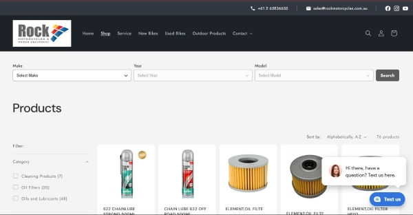

Professional Profile
Web Development Skills:
I have developed a strong foundation in web development through both formal education and practical experience.
My skills include:
- HTML5 semantic page structure
- Responsive layout design using CSS
- Navigation design and usability principles
- Website accessibility fundamentals
- File and project structure management
- Basic front-end debugging and testing
- JavaScript for interactive web pages
- Web publishing concepts and deployment preparation
E-Commerce & Digital Business Experience:
Unlike many entry-level developers, I have extensive hands-on exposure to live commercial systems through managing a multi-department retail operation. This experience has provided me with a deep understanding of the practical challenges and opportunities in the digital commerce space, including customer experience optimization, conversion rate improvement, and data-driven decision making.
Most recently, I have utilised my skills learnt in my studies to develop a Shopify e-commerce store for our motorcycle dealership. This project involved designing and implementing a user-friendly online storefront, integrating product data, and optimizing the customer journey to drive online sales. The store has not gone live as we are setting up the catalogue with both synchronisation of inventory to our bricks an mortar store and finalising the model fitment database.
Practical experience includes:
- Online product listings and marketplace management
- Customer transaction workflows
- Digital payment integration environments
- Inventory and product data handling
- Customer experience optimisation

(Use password: diecha to access the store)
AI-Assisted Development:
I have actively integrated AI tools into the development process, leveraging them for concept explanation, debugging assistance, and workflow optimization. This experience has enhanced my ability to rapidly prototype and iterate on web projects, while also gaining insights into the capabilities and limitations of AI in software development.
- Using AI for code explanation to understand complex concepts
- Debugging with AI assistance
- Optimizing development workflows with AI tools
Business Systems Perspective:
Years of operational leadership have developed skills that directly translate into technology roles:
- Process analysis and workflow optimisation
- Understanding user requirements from both staff and customer perspectives
- Problem solving under commercial constraints
- Translating business needs into system functionality
Current Study & Continuous Learning:
- Bachelor of Information Technology — Charles Sturt University
- Major: Software Development
- GPA: High Distinction average in programming and database subjects
- Completed subjects include Programming Principles and Database Systems (SQL)